Models
Monte Carlo Method
Monte Carlo (MC) methods in reinforcement learning are a set of techniques used to estimate the value functions and improve policies based on the average of complete returns (total rewards) from multiple episodes. In the context of a game like blackjack, Monte Carlo methods can be very effective for learning optimal strategies because it is an episodic game with clear beginnings and endings.
Monte Carlo methods can be categorized into two main types based on the relationship between the policy used to generate behavior (the behavior policy) and the policy being improved (the target policy): on-policy and off-policy methods.
MC (On-Policy)
On-policy methods involve learning about and improving the same policy that is used to make decisions and generate data. Essentially, the policy used to interact with the environment is the same policy that is evaluated and improved based on the gathered data.
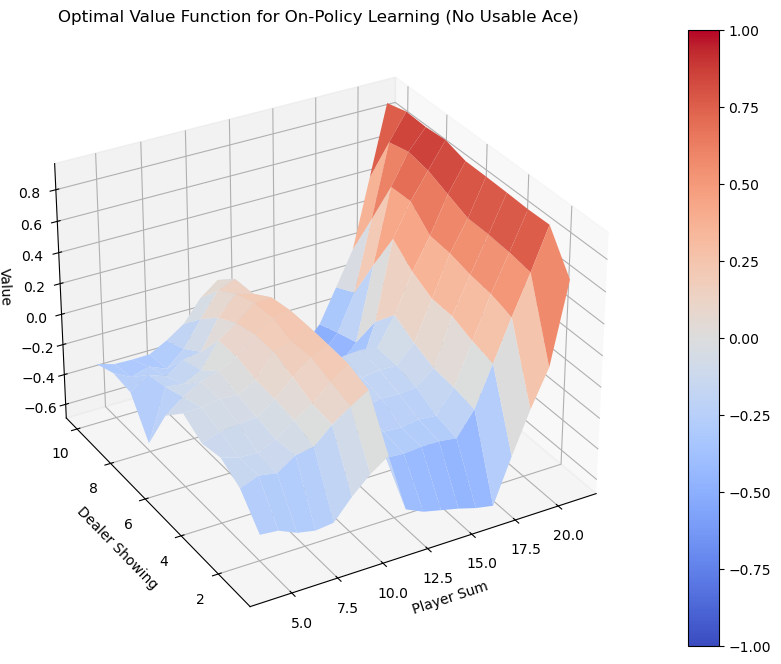
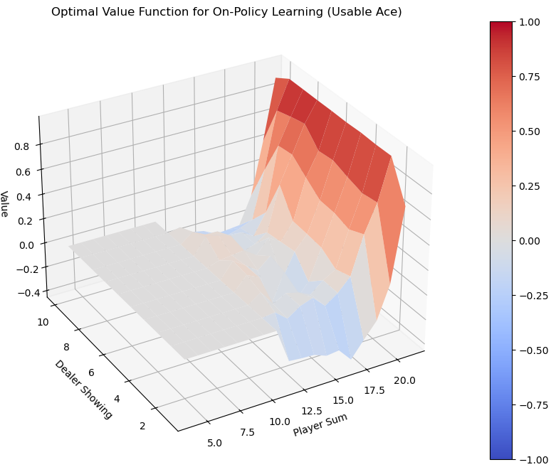
Both graphs effectively highlight how the value of a blackjack hand changes depending on the player’s total and the dealer’s up-card, and how having a usable ace increases the player’s advantage due to the flexibility it provides in hand values. This is because the ace can be valued as 1 or 11, giving the player greater flexibility to avoid busting and improve their hand.
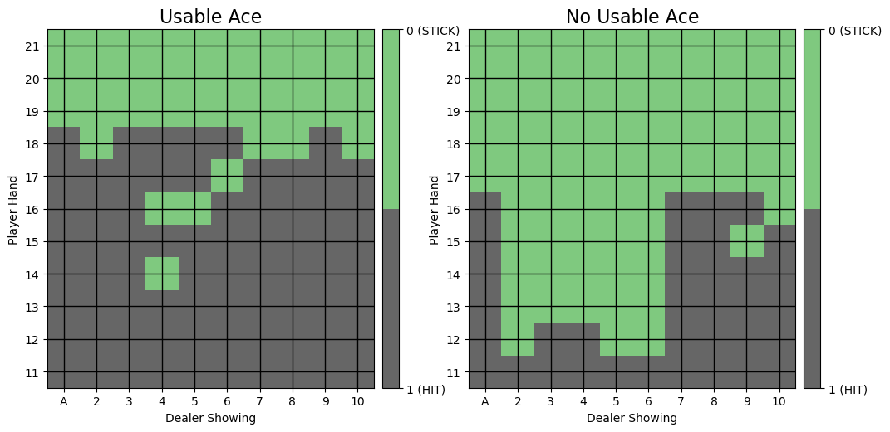
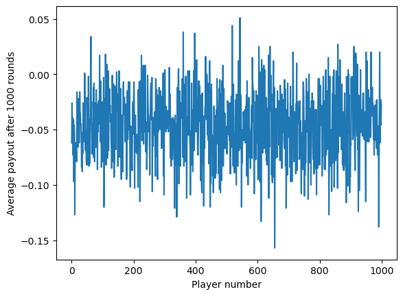
The average payout of -0.04703 after 1000 rounds based on the optimal policy from Monte Carlo (MC) on-policy simulations in blackjack suggests that, although the policy is optimized to increase the player’s chances of winning, it does not eliminate the inherent house edge present in the game. This negative average payout indicates that the player is expected to lose approximately 4.7 cents for every dollar bet over a large number of rounds, highlighting the challenge of overcoming the casino’s advantage even with strategic play.
MC (Off-Policy)
Off-policy methods use a different approach by learning about a target policy (the policy of interest) based on the behavior generated by another policy (the behavior policy). This separation allows the agent to learn from exploratory or even random actions that are not necessarily part of the optimal strategy.
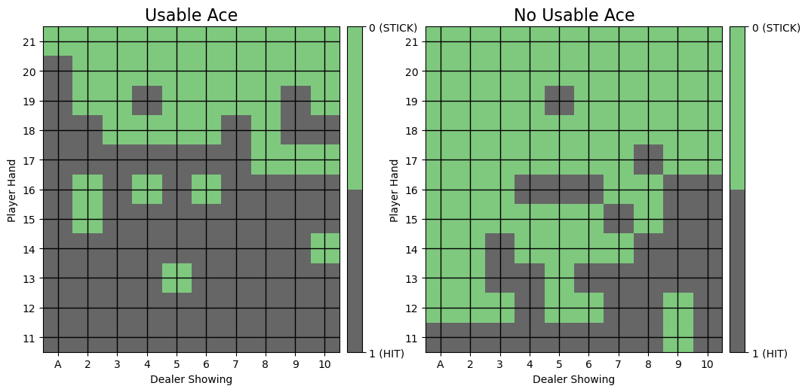
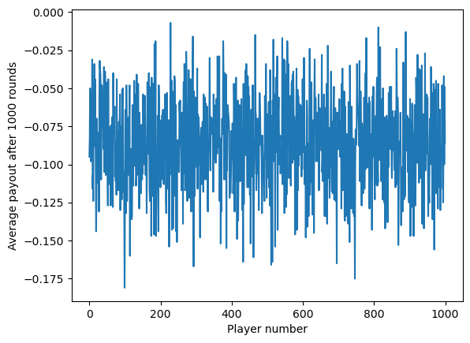
The average payout of -0.08581 after 1000 rounds based on the optimal policy from Monte Carlo (MC) off-policy simulations in blackjack indicates that, while the policy aims to optimize outcomes based on a separate exploratory policy, it still results in a net loss for the player. This larger average loss compared to the on-policy simulations (-0.08581 vs. -0.04703) suggests that the off-policy method might be either less efficient in exploiting the nuances of the game or may involve more risk due to the nature of the behavior policy used in its learning process.
Temporal Difference Learning Method
Temporal Difference (TD) Learning is a central method in reinforcement learning that combines ideas from Monte Carlo methods and dynamic programming. Unlike Monte Carlo methods, which wait until the end of an episode to update value estimates, TD learning updates estimates incrementally at each step of an episode. This allows TD learning to be used even in non-terminating (continuous) environments. TD methods bootstrap, which means they update value estimates based on other estimated values rather than waiting for a final outcome.
SARSA (On-Policy TD Learning)
SARSA, which stands for State-Action-Reward-State-Action, is an on-policy TD learning algorithm. It updates the action-value function based on the action taken by the current policy, hence being described as on-policy. This method focuses on evaluating and improving the policy that is used to make decisions, with the learning directly influenced by the actions taken according to the policy.
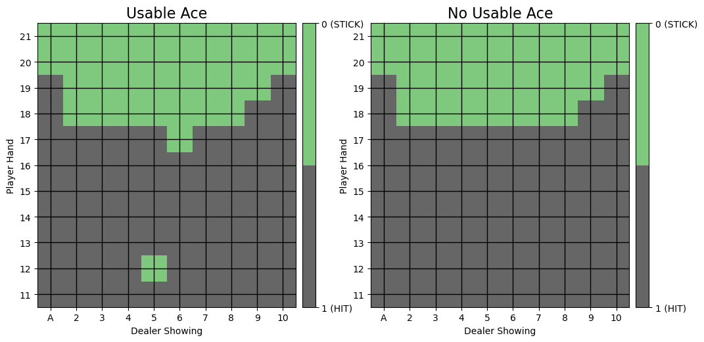
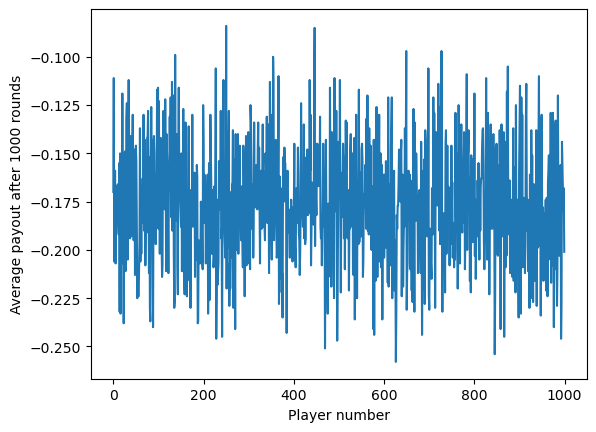
The average payout after 1000 rounds based on the optimal policy from SARSA in blackjack is -0.17661.
Q-Learning (Off-Policy TD Learning)
Q-learning is an off-policy TD learning algorithm and one of the most popular methods in reinforcement learning. It aims to find the optimal policy even when actions are taken according to an exploratory or different behavior policy.
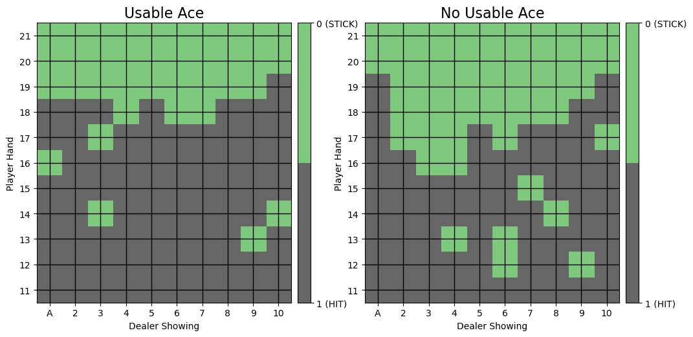
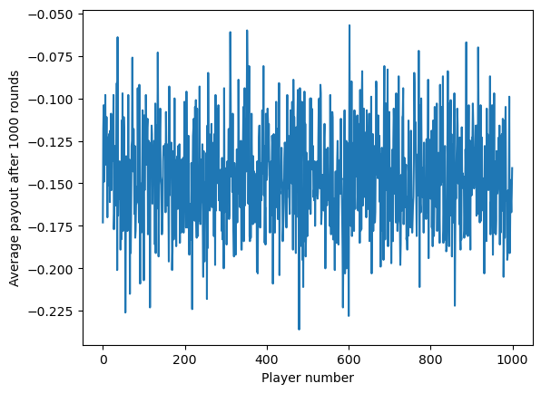
The average payout after 1000 rounds based on the optimal policy from Q-Learning in blackjack is -0.14613.
Deep Q-Learning Method
Deep Q-Learning is an advanced reinforcement learning technique that combines Q-learning, a model-free reinforcement learning algorithm, with deep neural networks. This approach is used to learn the optimal action-selection policy for a given task by using a neural network as a function approximator.
In our Deep Q-Network (DQN) configuration for Blackjack, we employ a discount factor of 0.99, which sufficiently prioritizes future rewards while ensuring that immediate outcomes remain influential in decision-making. This is appropriate given that Blackjack games generally reach a conclusion after a few moves. After experimenting with various learning rates, we opted for a rate of 0.0001. This rate struck a balance between efficient learning and stability; lower rates such as 0.00001 and 0.000001 resulted in excessively slow training progress, even in relatively small networks. The training regimen involved 500,000 episodes to robustly optimize its decision-making capabilities.
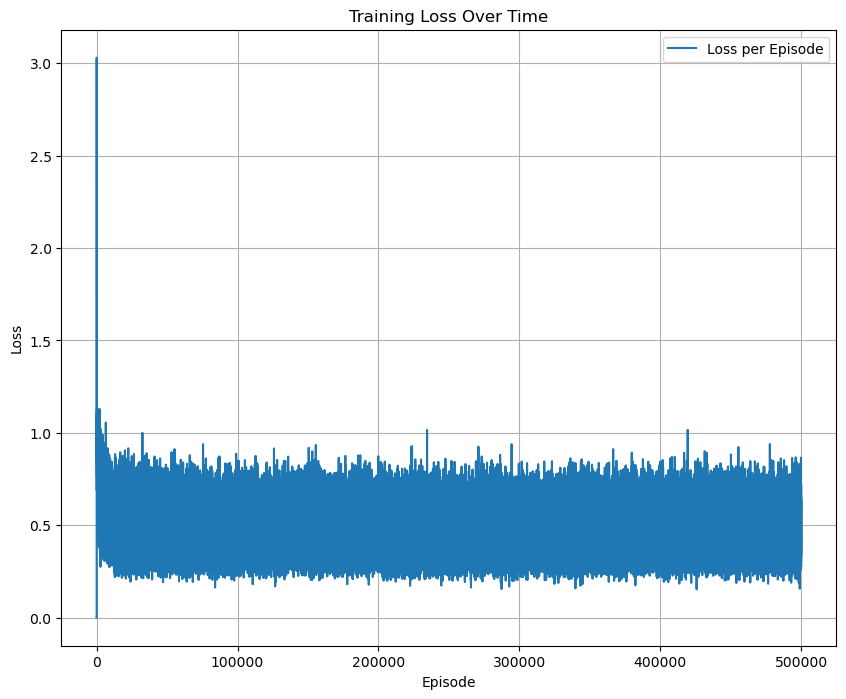
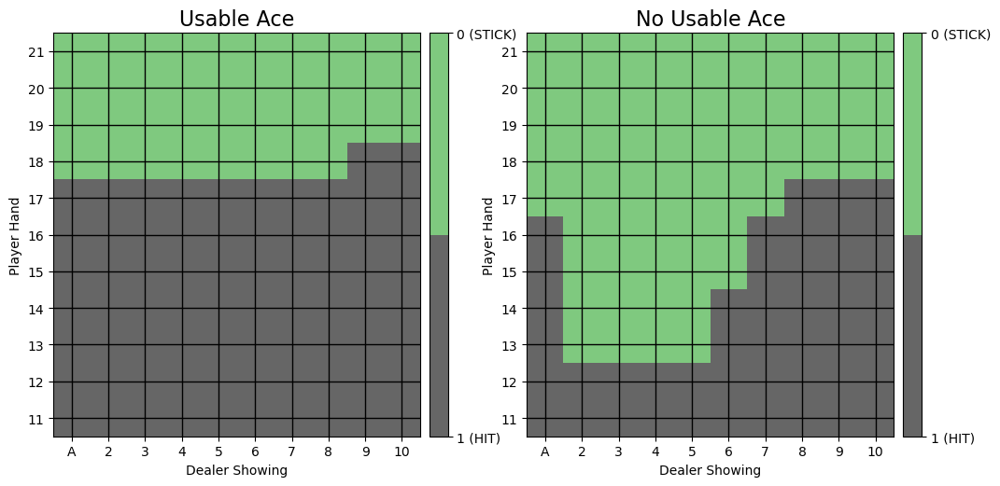
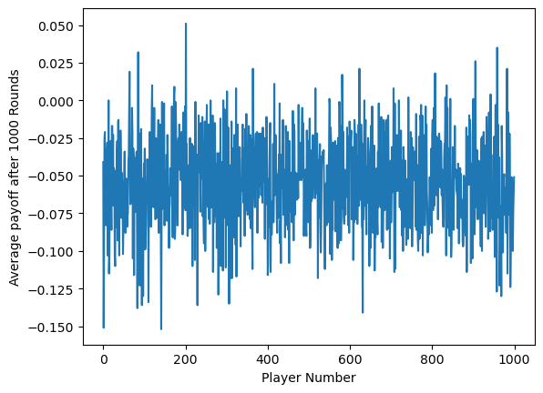
The average payout after 1000 rounds based on the optimal policy from Q-Learning in blackjack is -0.05446.